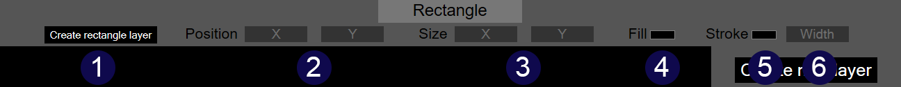

The rectangle tool can be used to create and modify
rectangles.
- The
create rectangle layer
button creates a new rectangle layer.
- Inputs for controlling the x and y coordinate of the top-left corner of the rectangle on the canvas. These values must be positive whole numbers.
- Inputs for controlling the size of the rectangle, with the x input setting the horizontal length of the rectangle, and the y input setting the vertical length.
- A colour input for setting the fill (background) colour of the rectangle.
- A colour input for setting the stroke (border) color of the rectangle.
- An input for setting the stroke (border) width of the rectangle. This is additional to the given size of the rectangle. This input must be a positive whole number.
The rectangle tool only works with rectangle layers. If the selected layer is not a rectangle layer, the inputs provided by the rectangle tool will be disabled.